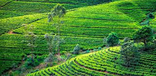
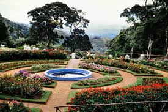

Nuwara Eliya sits in Sri Lanka’s central highlands at about 1,868 meters above sea level. The town is roughly 170 km from Colombo and about 75 km from Kandy; the scenic train route from Kandy is a memorable way to arrive.
Developed during British colonial rule as a cool hill station, Nuwara Eliya retains a distinctly colonial character — Tudor-style bungalows, manicured gardens, and a tradition of horse racing. The region became central to the island’s tea industry when the British established large plantations in the 19th century, shaping both landscape and local economy.
Gregory Lake and its promenade.
Hakgala Botanical Garden with a wide range of plants and flowers.
Colonial buildings: the Grand Hotel, post office, and racecourse.
Nearby Horton Plains National Park and World’s End viewpoint.
* Tea estates and factories offering guided tours and tastings.
Tea-plantation walks and factory tours (learn about plucking, processing, and grading).
Boating on Gregory Lake and picnicking..
Visiting the vegetable market and tasting fresh local produce (cool climate allows temperate crops).
Day trips to Horton Plains for sunrise hikes.
Best Season: February–April for clear skies and blooming flowers.
Temperature: cool; bring layers, a light jacket, and waterproofs in the monsoon.
Transport: Train from Kandy (scenic) or road (hire a car/driver).
Accommodation ranges from budget guesthouses to colonial-style hotels.
